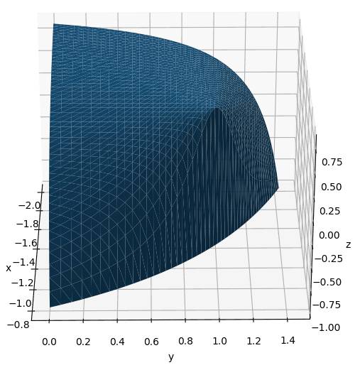

Plot non-linear inequalities with matplotlib
Posted by rioj7 on 2024-01-18
On 2024-01-18 user MysSk (now deleted) posted the question Plot non-linear inequalities with matplotlib on StackOverflow. Shortly after I posted an answer the question was deleted.
Here I show the question and solution so others might be able to find the page through a search engine.
The final version of the surface:

Question
I would like to plot this non-linear inequality in matplotlib
[-2 < x < -(4/5)] [0 < y < (20 + 25x)/(-1 + 10x)] [-1 < z < (16 + 15x - 9y - 10x*y)/(4 + 10x + 10y)]